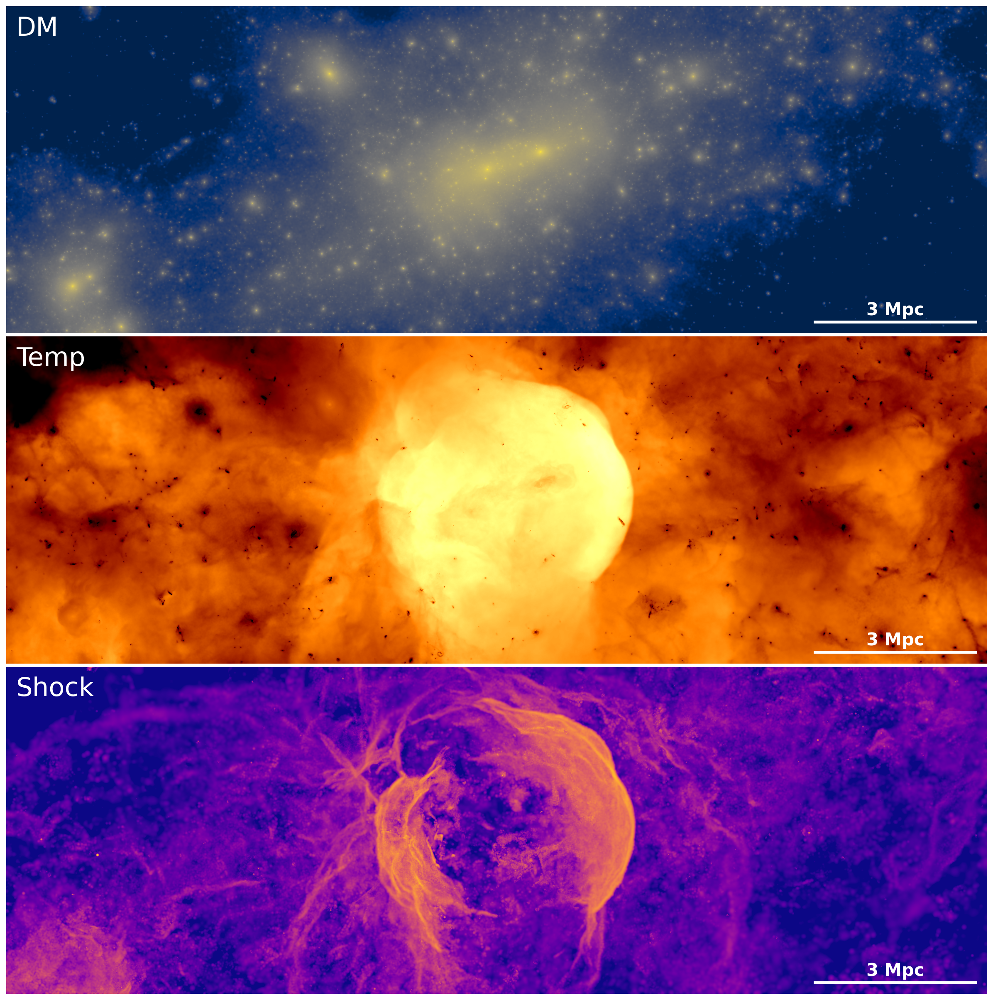

Radio Relics and Cluster Mergers
Exploring the physics of radio relics and their connection to merger shocks in galaxy clusters using simulations and observations.
I am curious about the universe — from galaxy clusters and cosmic structure to the nature of dark matter and the origin of cosmic particles. I enjoy combining simulations, observations, and new ideas to explore these questions.

Exploring the physics of radio relics and their connection to merger shocks in galaxy clusters using simulations and observations.

Investigating how alternative dark matter models affect the evolution of cluster mergers and cosmic structures.

Reconstructing cluster mass distributions and comparing them with radio/X‑ray features to understand cosmic evolution.
I also enjoy sharing science with the public, teaching, and exploring creative projects outside of astronomy — from visual design to outreach activities that inspire the next generation.
Email: wonki.lee@yonsei.ac.kr
Google Scholar · ORCID ·